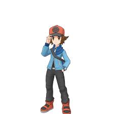
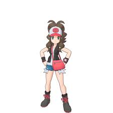
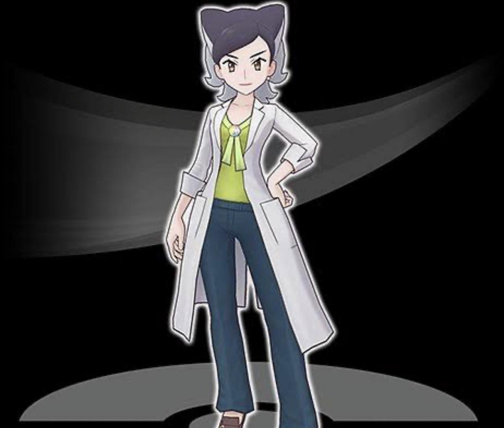

Main Characters

Caelum
The Solar Voyager
A determined trainer seeking to restore balance between light and shadow. Inspired by ancient heroes, he wears solar-orange gear to guide his path.

Lyra
The Lunar Sentinel
A skilled strategist who uncovers hidden truths of the Eclipse region. Her midnight-purple attire helps her blend into the shadows she investigates.

Professor Solara
Eclipse Researcher
A brilliant researcher studying the mysterious energy affecting monsters. She provides starters to new trainers and is the elder sister of the 8th Gym Leader, Lumina.